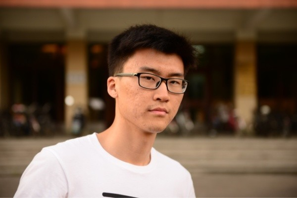
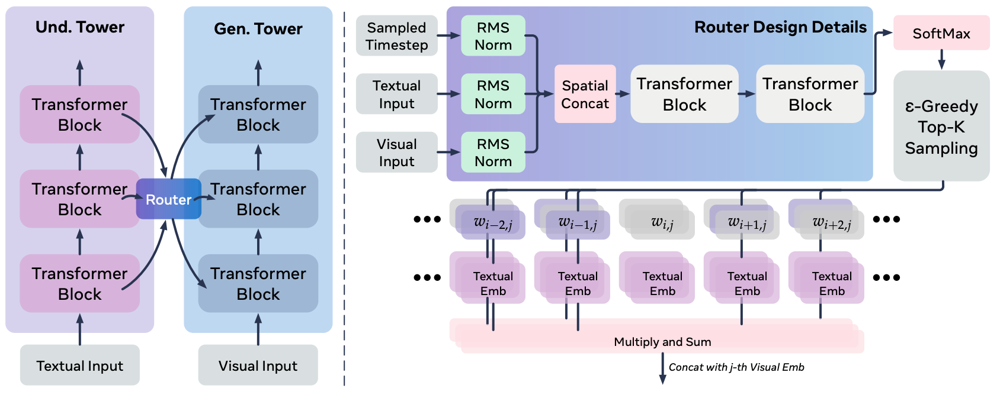
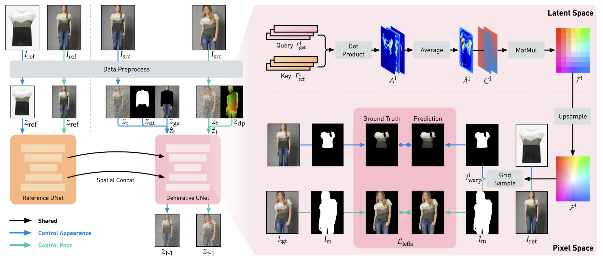
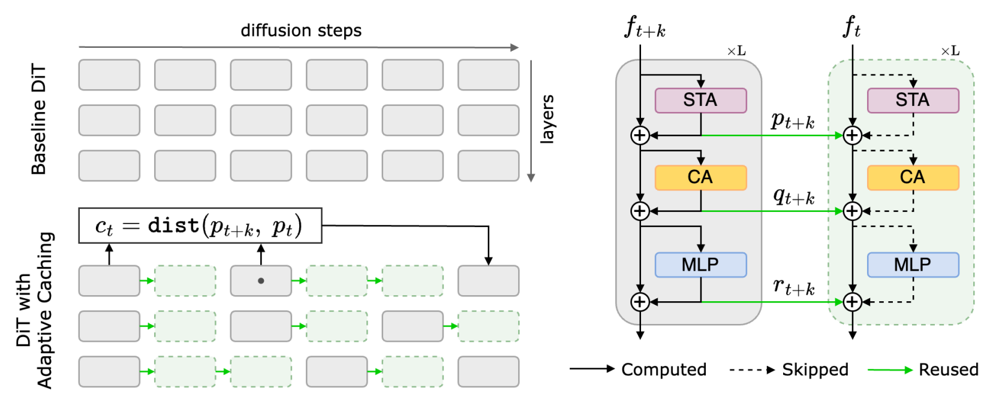
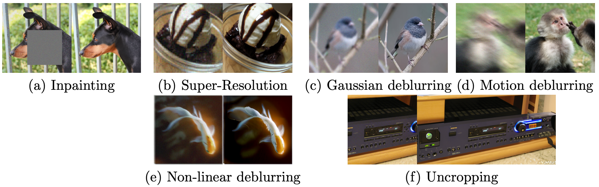
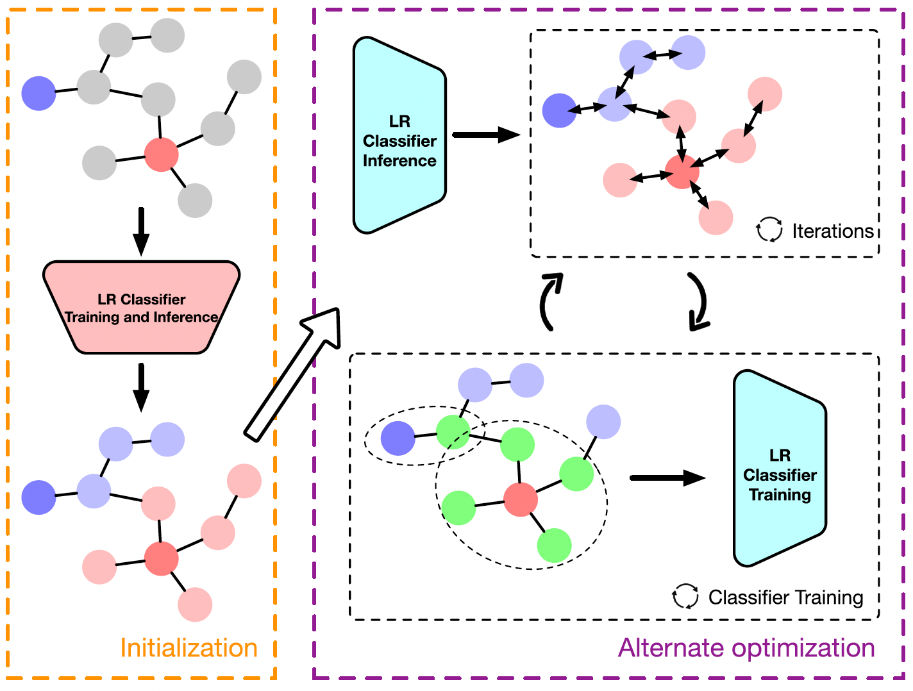
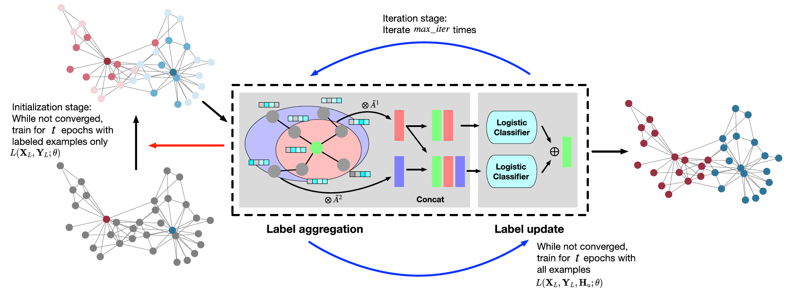
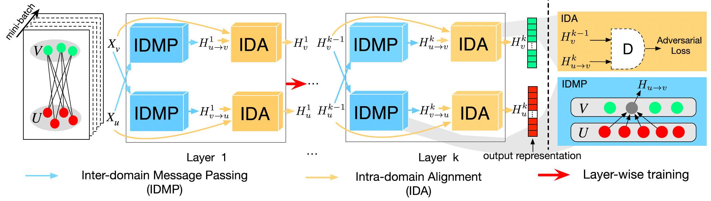
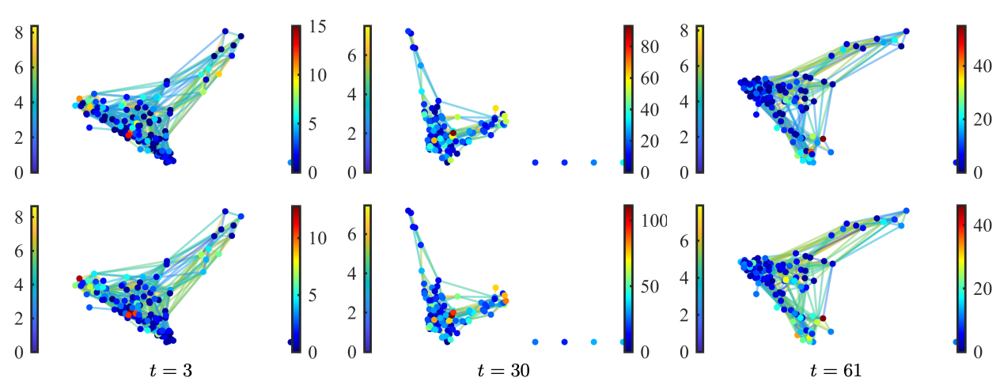

|
I am a Research Scientist at Meta, Monetization GenAI. I received my Ph.D. in Electrical and Computer Engineering at University of Southern California (USC), where I was fortunate to work with C.-C. Jay Kuo. Before joining USC, I received my B.S. in Physics from Fudan University. |
 |
{kind=link}
|
I am interested in computer vision, deep learning and machine learning. My recent focus is generative models. |
|  |
Haozhe Liu*, Ding Liu*, Mingchen Zhuge*, Zijian Zhou*, Tian Xie*, Sen He, Yukang Yang, Shuming Liu, Yuren Cong, Jiadong Guo, Hongyu Xu, Ke Xu, Kam-Woh Ng, Juan C. Pérez, Juan-ManuelPérez-Rúa, Tao Xiang, Wei Liu, Shikun Liu, Jürgen Schmidhuber (*core contributor) arXiv, 2025 project page / code |
|  |
Zijian Zhou, Shikun Liu, Xiao Han, Haozhe Liu, Kam Woh Ng, Tian Xie, Yuren Cong, Hang Li, Mengmeng Xu, Juan-Manuel Pérez-Rúa, Aditya Patel, Tao Xiang, Miaojing Shi, Sen He Computer Vision and Pattern Recognition (CVPR), 2025 project page / code |
|  |
Kumara Kahatapitiya, Haozhe Liu, Sen He, Ding Liu, Menglin Jia, Michael S. Ryoo, Tian Xie International Conference on Computer Vision (ICCV), 2025 project page / code |
|  |
Haoyue Tang, Tian Xie, Aosong Feng, Hanyu Wang, Chenyang Zhang, Yang Bai International Conference on Artificial Intelligence and Statistics (AISTATS), 2024 |
|  |
Tian Xie, Rajgopal Kannan, C.-C. Jay Kuo IEEE Transactions on Pattern Analysis and Machine Intelligence (TPAMI), 2023 code |
|  |
Tian Xie, Bin Wang, C.-C. Jay Kuo IEEE Transactions on Neural Networks and Learning Systems (TNNLS), 2022 code |
|  |
Tian Xie, Chaoyang He, Xiang Ren, Cyrus Shahabi, C.-C. Jay Kuo IEEE Transactions on Neural Networks and Learning Systems (TNNLS), 2022 code |
|  |
Yi Yan, Tian Xie, Ercan E. Kuruoglu IEEE Transactions on Signal and Information Processing over Networks (TSIPN), 2024 |
|
|

|
Meta
Software Engineer, Machine Learning Intern May 2021 - August 2021 |

|
Tencent AI Lab
Research Intern May 2019 - August 2019 |
|
Journal Reviewer: IEEE TPAMI, IEEE TNNLS, IEEE TKDE, IEEE TNSE, APSIPA. Conference Reviewer: IJCNN (2025, 2022), ICIP (2022, 2023, 2024), ICASSP. |